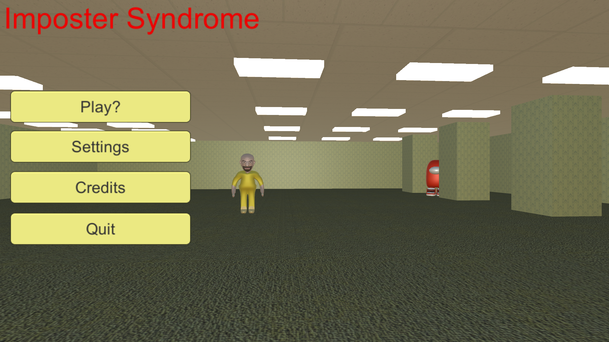
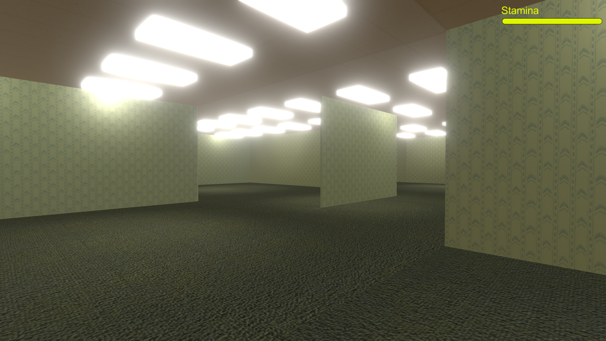

Welcome to the projects page! Here you can view other projects which I've worked on with others in the past and present. There's only a few I can think of adding right now, but I'm hoping to add more to this page in the future.
I've played many awesome video games over the course of my life which inspired me to begin work on my own. Below is a game project I worked on with a friend.
Imposter Syndrome is a game my friend Bogdan and I worked on in the Unity game engine. He is very skilled at coding and did all the coding for this game using C# while I made all of the graphics and music. In his spare time he also often makes mods for the video game "Rain World," so if you own the game you should definitely go check them out. Anyways, our game is a 3D "horror" game where the player must escape a huge maze known as "The Backrooms" while staying away from the various dangerous entities which lurk nearby. As our first real game project we tried to keep it relatively simple, although there are some pretty cool features I'd like to talk about. Whenever the player starts or restarts the game, the maze is different every time as it is shuffled around. The different entities in the game were modelled and animated by me using Blender (one of which you can see on the 3D Stuff page). Additionally, each entity has a unique behaviour, such as Quandale Dingle who will call upon all other nearby Quandales to your location or Hamood Habibi who knows where you are at all times and gradually speeds up towards you over time. Those are just some aspects of this game we made. If you want to download it the GitHub page is down below. If you don't want to download it however I also have some photos and videos of the game which you can watch. Currently the game is on indefinite hiatus, ever since the whole Unity fiasco where they tried to charge for downloads.
 I have also worked on making mods for video games. Mods can completely change how a game is played or add new stuff to it to keep things exciting. Below is a mod I worked on with the Rain World Detroit Team.
ScugZero is a mod for the video game "Rain World". In this mod the player will be able to control a new character we call Zero who has a fierce katana to cut through the enemies in the world of Rain World. They will also have the ability to slow time and do some cool moves. Essentially, this mod combines the gameplay of "Katana Zero" with Rain World to create a new and exciting experience. This mod is currently being developed by the Rain World Detroit Team which encompasses me and four others. One of those four others is the talented artist Carmineder who made the pixel art for this project including the wonderful ScugZero logo above. I am making the music and sound effects for the mod, as each region of the game will have a new remix that accompanies it. In addition to custom music and sounds, the mod will also feature boss battles and beefed up enemies to create a more rigorous challenge for the player. Below is a link to the Detroit Team Tumblr page where you'll see occasional updates on the mod.
Fantasy worlds that don't exist are really cool since the rules of reality can be bent in any way shape or form, so I wanted to make my own. Below is a worldbuilding project I passionately began many years ago.
Hidden Lake is an old project of mine which I started working on in middle school. It details a mysterious lake on an island far away from any other land. In and around this lake are alien plants and animals which call the lake home. The lake itself is over 12 kilometres deep and home to over 150 unique species with many different biomes and environments. Some of the things around the lake are so outlandish they couldn't exist anywhere else other than the lake. I originally came up with this idea when I was taking a stroll around a lake with my dad. I was telling him about the "Kong: Skull Island" movie I had recently watched and its wild creatures. I also had and still have a fascination with natural histry and the evolution of species as well as the way differnent species adapt to new changes. As I stared at the snow and ice-covered lake I was walking around (which you can see a photo of above during the fall season), a spark of imagination brought on by everything in my mind began concting ideas for new, strange plants and animals. That day I went home and began drawing every single idea I had along with creating a short description about each species and some other information about them like their diet and depth they live in the lake. I stopped working on Hidden Lake a few years ago as I created the last species I wanted and closed the Hidden Lake almanac. Perhaps however, I may bring Hidden Lake back in some form in the future. Only time will tell. Below is a Doogle Drive link you can click on which will show you everything Hidden Lake has to offer. In the drive you'll find little info cards of all the species as well as some old music tracks I made to represent the lake's various environments.
Currently these are the only few projects I feel are worthwhile to be on this page. In the future I hope to add lots more to this short page. I really do love working on passion projects, especially with others who are more skilled in other areas than I. Through working on projects like these I improve my current abilities which I will hopefully be able to use for more ambitious projects in the future.
NAVIGATION
Home 3D Stuff Animation Art Computer Programming Music Photography ProjectsSOCIALS
Youtube SoundCloud Tumblr